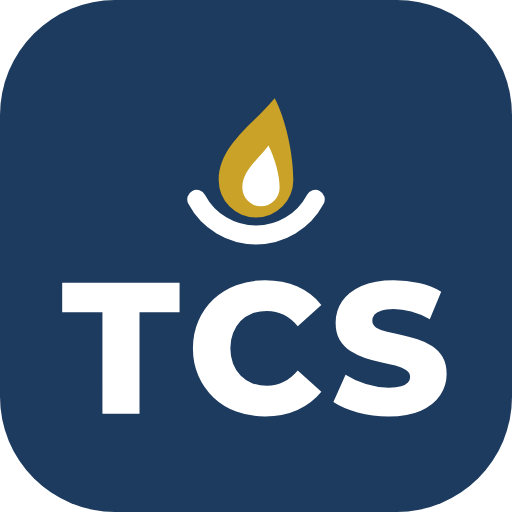

TOTAL CARE SYSTEM
학부모님,
이제 함께 보실 수 있습니다
우리 아이의 예치금·매점·학비를 언제든 열어보시고,
필요한 서류도 여기서 바로 신청하실 수 있습니다.
TCS 학부모 가입 안내
1TCS가 무엇인가요
TCS(Total Care System) 는 저희 공동체가 학생 한 명 한 명을 돌보기 위해 쓰는 시스템입니다.
흩어져 있던 것들 — 출석, 학비, 매점, 일정, 공지, 생활기록 — 을 한곳에 모아 두는 곳입니다.
지금까지는 선생님과 학생들이 썼습니다. 이번에 학부모님도 들어오셔서, 우리 아이에 관한 것을 직접 보실 수 있게 되었습니다.
그동안 따로 여쭤보셔야 했던 것들을 이제 언제든 열어보실 수 있습니다.
2학부모님이 보실 수 있는 것
📄서류 신청
재학증명서 · 학비 납입
증명서 등을 바로 신청
💬공지방 · 일정 · 노트
공동체 소식과 일정을 함께 보실 수 있습니다
🔒 보시는 것은 내 아이의 것만입니다
다른 아이의 자료는 보이지 않습니다. 그리고 생활기록부 · 출결 · 상담 · 보건 기록은 선생님만 보실 수 있습니다.
아이에 관해 더 알고 싶으신 것이 있으면 담당 선생님께 편히 말씀해 주세요.
3가입하는 방법
먼저 확인해 주세요
아이가 TCS에 먼저 가입되어 있어야 찾아드릴 수 있습니다. 아직이라면 담당 선생님께 먼저 말씀해 주세요.
아래 주소로 들어가
회원가입을 누릅니다.
TCS 주소
koreayjk.github.io/imessenger
휴대폰 카메라로 오른쪽 QR을 비추면 바로 열립니다.
이메일 주소,
비밀번호(6자 이상),
성함,
생년월일을 적습니다.
생년월일은 학부모님 본인의 것입니다.
아래에 칸이 열립니다.
아이 이름과
아이 생년월일을 적고,
아버지 / 어머니 / 보호자 중 하나를 고른 뒤
아이 확인하기 를 누릅니다.
맞으면 ✅ ○○○ 학생을 찾았어요 라고 나옵니다.
안 나오면 이름이나 생년월일을 다시 확인해 주세요.
관리자가 확인하고 아이와 연결해 드리면 바로 쓰실 수 있습니다.
💡 아이 이름을 목록으로 보여드리지 않는 이유
가입 화면은 로그인 전이라, 목록을 띄우면 누구나 전교생 이름을 볼 수 있게 됩니다.
그래서 이름과 생년월일을 둘 다 맞히셨을 때만 찾아드립니다.
번거로우시겠지만 아이들의 이름을 지키기 위한 것이니 양해 부탁드립니다.
4가입하신 뒤에는
들어오시면 왼쪽에 👨👩👧 내 아이 가 보입니다. 누르시면 예치금 · 매점 · 학비 · 서류 신청이 한 화면에 있습니다.
아이가 둘 이상이면 위에서 이름을 눌러 바꿔 보실 수 있습니다.
서류가 필요하실 때는 📄 서류 신청에서 서류 종류와 어디에 내시는지를 적어 신청해 주세요.
사무실에서 확인하고 발급해 드립니다. 발급되면 같은 자리에 ‘발급 완료’ 로 표시됩니다.